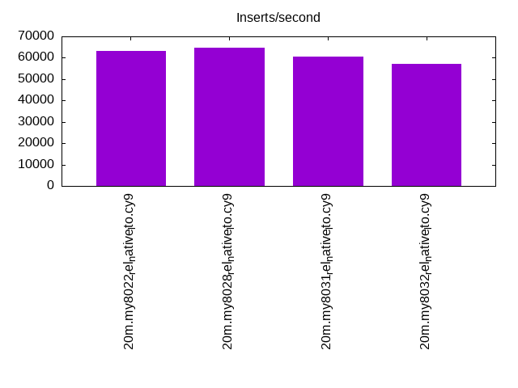
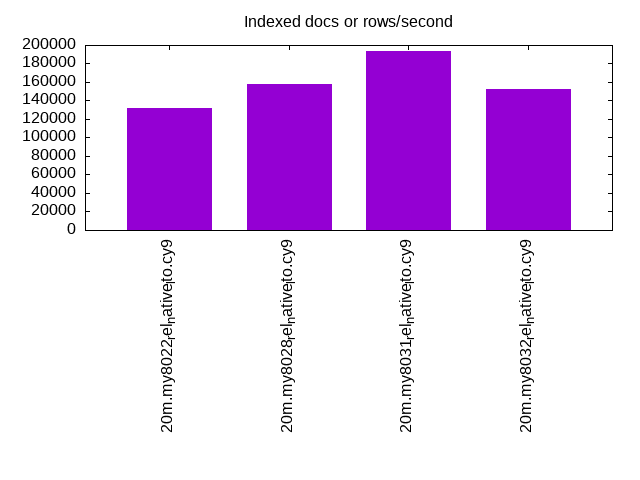
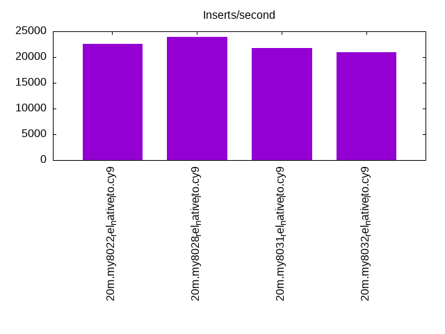
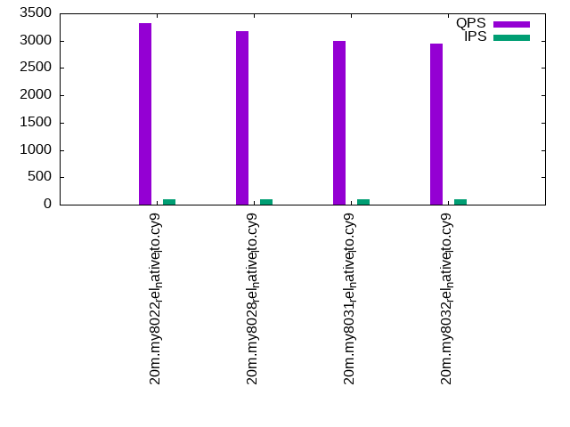
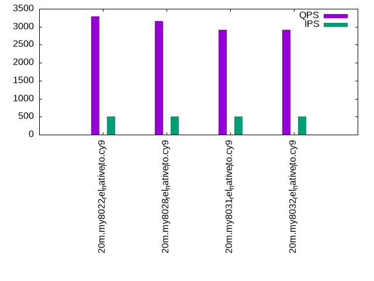
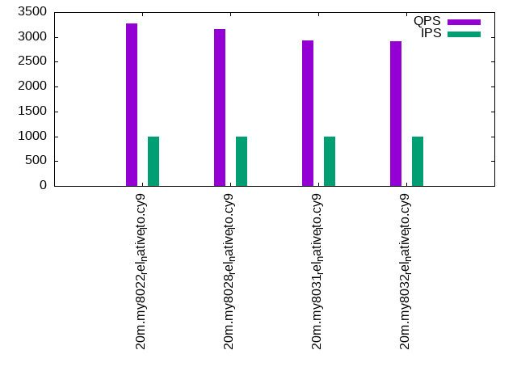

This is a report for the insert benchmark with 20M docs and 1 client(s). It is generated by scripts (bash, awk, sed) and Tufte might not be impressed. An overview of the insert benchmark is here and a short update is here. Below, by DBMS, I mean DBMS+version.config. An example is my8020.c10b40 where my means MySQL, 8020 is version 8.0.20 and c10b40 is the name for the configuration file.
The test server has 8 AMD cores, 16G RAM and an NVMe SSD. It is described here as the Beelink. The benchmark was run with 1 client and there were 1 or 2 connections per client (1 for queries, 1 for inserts). The benchmark loads 20M rows without secondary indexes, creates secondary indexes, loads another 20M rows then does 3 read+write tests for one hour each that do queries as fast as possible with 100, 500 and then 1000 writes/second/client concurrent with the queries. There is 1 table. The database is cached by the storage engine and the only IO is for writes. Clients and the DBMS share one server. The per-database configs are in the per-database subdirectories here.
The tested DBMS are:
The numbers are inserts/s for l.i0 and l.i1, indexed docs (or rows) /s for l.x and queries/s for q*.2. The values are the average rate over the entire test for inserts (IPS) and queries (QPS). The range of values for IPS and QPS is split into 3 parts: bottom 25%, middle 50%, top 25%. Values in the bottom 25% have a red background, values in the top 25% have a green background and values in the middle have no color. A gray background is used for values that can be ignored because the DBMS did not sustain the target insert rate. Red backgrounds are not used when the minimum value is within 80% of the max value.
| dbms | l.i0 | l.x | l.i1 | q100.1 | q500.1 | q1000.1 |
|---|---|---|---|---|---|---|
| 20m.my8022_rel_native_lto.cy9 | 63091 | 131372 | 22522 | 3315 | 3291 | 3273 |
| 20m.my8028_rel_native_lto.cy9 | 64516 | 158268 | 23895 | 3181 | 3162 | 3152 |
| 20m.my8031_rel_native_lto.cy9 | 60423 | 193269 | 21786 | 2991 | 2911 | 2937 |
| 20m.my8032_rel_native_lto.cy9 | 57143 | 152273 | 20920 | 2946 | 2918 | 2908 |
This table has relative throughput, throughput for the DBMS relative to the DBMS in the first line, using the absolute throughput from the previous table.
| dbms | l.i0 | l.x | l.i1 | q100.1 | q500.1 | q1000.1 |
|---|---|---|---|---|---|---|
| 20m.my8022_rel_native_lto.cy9 | 1.00 | 1.00 | 1.00 | 1.00 | 1.00 | 1.00 |
| 20m.my8028_rel_native_lto.cy9 | 1.02 | 1.20 | 1.06 | 0.96 | 0.96 | 0.96 |
| 20m.my8031_rel_native_lto.cy9 | 0.96 | 1.47 | 0.97 | 0.90 | 0.88 | 0.90 |
| 20m.my8032_rel_native_lto.cy9 | 0.91 | 1.16 | 0.93 | 0.89 | 0.89 | 0.89 |
This lists the average rate of inserts/s for the tests that do inserts concurrent with queries. For such tests the query rate is listed in the table above. The read+write tests are setup so that the insert rate should match the target rate every second. Cells that are not at least 95% of the target have a red background to indicate a failure to satisfy the target.
| dbms | q100.1 | q500.1 | q1000.1 |
|---|---|---|---|
| my8022_rel_native_lto.cy9 | 100 | 499 | 997 |
| my8028_rel_native_lto.cy9 | 100 | 499 | 997 |
| my8031_rel_native_lto.cy9 | 100 | 498 | 997 |
| my8032_rel_native_lto.cy9 | 100 | 498 | 997 |
| target | 100 | 500 | 1000 |
l.i0: load without secondary indexes. Graphs for performance per 1-second interval are here.
Average throughput:
Insert response time histogram: each cell has the percentage of responses that take <= the time in the header and max is the max response time in seconds. For the max column values in the top 25% of the range have a red background and in the bottom 25% of the range have a green background. The red background is not used when the min value is within 80% of the max value.
| dbms | 256us | 1ms | 4ms | 16ms | 64ms | 256ms | 1s | 4s | 16s | gt | max |
|---|---|---|---|---|---|---|---|---|---|---|---|
| my8022_rel_native_lto.cy9 | 99.581 | 0.238 | 0.178 | 0.004 | 0.097 | ||||||
| my8028_rel_native_lto.cy9 | 99.460 | 0.393 | 0.144 | 0.003 | 0.073 | ||||||
| my8031_rel_native_lto.cy9 | 99.436 | 0.415 | 0.146 | 0.003 | 0.094 | ||||||
| my8032_rel_native_lto.cy9 | 99.414 | 0.441 | 0.142 | 0.003 | 0.070 |
Performance metrics for the DBMS listed above. Some are normalized by throughput, others are not. Legend for results is here.
ips qps rps rmbps wps wmbps rpq rkbpq wpi wkbpi csps cpups cspq cpupq dbgb1 dbgb2 rss maxop p50 p99 tag 63091 0 0 0.0 181.2 18.4 0.000 0.000 0.003 0.299 6560 21.1 0.104 27 1.3 9.9 2.5 0.097 63656 43515 20m.my8022_rel_native_lto.cy9 64516 0 0 0.0 185.0 18.8 0.000 0.000 0.003 0.299 6909 21.6 0.107 27 1.3 9.9 2.5 0.073 64694 57464 20m.my8028_rel_native_lto.cy9 60423 0 0 0.0 190.9 18.3 0.000 0.000 0.003 0.310 6656 20.4 0.110 27 1.3 9.9 2.5 0.094 60550 52941 20m.my8031_rel_native_lto.cy9 57143 0 0 0.0 183.9 17.4 0.000 0.000 0.003 0.312 6383 20.4 0.112 29 1.3 9.9 2.5 0.070 57437 39346 20m.my8032_rel_native_lto.cy9
l.x: create secondary indexes.
Average throughput:
Performance metrics for the DBMS listed above. Some are normalized by throughput, others are not. Legend for results is here.
ips qps rps rmbps wps wmbps rpq rkbpq wpi wkbpi csps cpups cspq cpupq dbgb1 dbgb2 rss maxop p50 p99 tag 131372 0 0 0.0 1048.1 102.9 0.000 0.000 0.008 0.802 6849 12.8 0.052 8 3.0 11.5 3.0 0.019 NA NA 20m.my8022_rel_native_lto.cy9 158268 0 829 55.5 2879.7 161.2 0.005 0.359 0.018 1.043 10453 43.7 0.066 22 3.0 11.5 3.8 0.011 NA NA 20m.my8028_rel_native_lto.cy9 193269 0 1036 69.3 2890.9 191.1 0.005 0.367 0.015 1.012 12261 43.7 0.063 18 3.0 11.5 3.9 0.020 NA NA 20m.my8031_rel_native_lto.cy9 152273 0 797 53.3 2769.8 155.0 0.005 0.359 0.018 1.042 10504 43.2 0.069 23 3.0 11.5 3.9 0.019 NA NA 20m.my8032_rel_native_lto.cy9
l.i1: continue load after secondary indexes created. Graphs for performance per 1-second interval are here.
Average throughput:
Insert response time histogram: each cell has the percentage of responses that take <= the time in the header and max is the max response time in seconds. For the max column values in the top 25% of the range have a red background and in the bottom 25% of the range have a green background. The red background is not used when the min value is within 80% of the max value.
| dbms | 256us | 1ms | 4ms | 16ms | 64ms | 256ms | 1s | 4s | 16s | gt | max |
|---|---|---|---|---|---|---|---|---|---|---|---|
| my8022_rel_native_lto.cy9 | 98.837 | 0.786 | 0.368 | 0.009 | 0.077 | ||||||
| my8028_rel_native_lto.cy9 | 98.721 | 0.997 | 0.281 | 0.001 | 0.092 | ||||||
| my8031_rel_native_lto.cy9 | 98.599 | 1.094 | 0.306 | 0.002 | 0.079 | ||||||
| my8032_rel_native_lto.cy9 | 98.561 | 1.132 | 0.306 | nonzero | 0.070 |
Performance metrics for the DBMS listed above. Some are normalized by throughput, others are not. Legend for results is here.
ips qps rps rmbps wps wmbps rpq rkbpq wpi wkbpi csps cpups cspq cpupq dbgb1 dbgb2 rss maxop p50 p99 tag 22522 0 104 1.6 900.2 34.9 0.005 0.074 0.040 1.586 6805 15.5 0.302 55 7.9 16.4 8.3 0.077 23624 1099 20m.my8022_rel_native_lto.cy9 23895 0 110 1.7 937.9 36.6 0.005 0.074 0.039 1.568 8025 15.9 0.336 53 7.9 16.4 8.3 0.092 24623 1548 20m.my8028_rel_native_lto.cy9 21786 0 101 1.6 957.0 37.7 0.005 0.074 0.044 1.773 7863 15.8 0.361 58 7.9 16.4 8.3 0.079 22425 1599 20m.my8031_rel_native_lto.cy9 20920 0 96 1.5 925.5 36.4 0.005 0.074 0.044 1.781 7605 15.5 0.364 59 7.9 16.4 8.3 0.070 21587 1649 20m.my8032_rel_native_lto.cy9
q100.1: range queries with 100 insert/s per client. Graphs for performance per 1-second interval are here.
Average throughput:
Query response time histogram: each cell has the percentage of responses that take <= the time in the header and max is the max response time in seconds. For max values in the top 25% of the range have a red background and in the bottom 25% of the range have a green background. The red background is not used when the min value is within 80% of the max value.
| dbms | 256us | 1ms | 4ms | 16ms | 64ms | 256ms | 1s | 4s | 16s | gt | max |
|---|---|---|---|---|---|---|---|---|---|---|---|
| my8022_rel_native_lto.cy9 | 33.847 | 66.152 | nonzero | nonzero | nonzero | 0.025 | |||||
| my8028_rel_native_lto.cy9 | 28.701 | 71.298 | nonzero | nonzero | nonzero | 0.017 | |||||
| my8031_rel_native_lto.cy9 | 20.410 | 79.590 | nonzero | nonzero | nonzero | 0.023 | |||||
| my8032_rel_native_lto.cy9 | 16.936 | 83.063 | nonzero | nonzero | nonzero | 0.017 |
Insert response time histogram: each cell has the percentage of responses that take <= the time in the header and max is the max response time in seconds. For max values in the top 25% of the range have a red background and in the bottom 25% of the range have a green background. The red background is not used when the min value is within 80% of the max value.
| dbms | 256us | 1ms | 4ms | 16ms | 64ms | 256ms | 1s | 4s | 16s | gt | max |
|---|---|---|---|---|---|---|---|---|---|---|---|
| my8022_rel_native_lto.cy9 | 98.861 | 0.444 | 0.694 | 0.028 | |||||||
| my8028_rel_native_lto.cy9 | 99.167 | 0.194 | 0.639 | 0.022 | |||||||
| my8031_rel_native_lto.cy9 | 98.972 | 0.444 | 0.583 | 0.027 | |||||||
| my8032_rel_native_lto.cy9 | 98.583 | 0.778 | 0.639 | 0.025 |
Performance metrics for the DBMS listed above. Some are normalized by throughput, others are not. Legend for results is here.
ips qps rps rmbps wps wmbps rpq rkbpq wpi wkbpi csps cpups cspq cpupq dbgb1 dbgb2 rss maxop p50 p99 tag 100 3315 0 0.0 157.5 3.9 0.000 0.000 1.580 40.084 13175 12.6 3.974 304 8.0 16.5 8.4 0.025 3308 3117 20m.my8022_rel_native_lto.cy9 100 3181 0 0.0 160.4 3.9 0.000 0.000 1.608 40.537 12851 12.9 4.041 324 8.0 16.5 8.4 0.017 3165 3036 20m.my8028_rel_native_lto.cy9 100 2991 0 0.0 182.0 4.5 0.000 0.000 1.828 46.269 12407 12.8 4.148 342 8.0 16.5 8.4 0.023 2975 2844 20m.my8031_rel_native_lto.cy9 100 2946 0 0.0 184.5 4.6 0.000 0.000 1.850 46.800 12259 12.8 4.160 348 8.0 16.5 8.4 0.017 2925 2781 20m.my8032_rel_native_lto.cy9
q500.1: range queries with 500 insert/s per client. Graphs for performance per 1-second interval are here.
Average throughput:
Query response time histogram: each cell has the percentage of responses that take <= the time in the header and max is the max response time in seconds. For max values in the top 25% of the range have a red background and in the bottom 25% of the range have a green background. The red background is not used when the min value is within 80% of the max value.
| dbms | 256us | 1ms | 4ms | 16ms | 64ms | 256ms | 1s | 4s | 16s | gt | max |
|---|---|---|---|---|---|---|---|---|---|---|---|
| my8022_rel_native_lto.cy9 | 32.447 | 67.551 | 0.001 | nonzero | nonzero | 0.025 | |||||
| my8028_rel_native_lto.cy9 | 27.688 | 72.310 | 0.001 | 0.001 | nonzero | 0.021 | |||||
| my8031_rel_native_lto.cy9 | 15.760 | 84.239 | 0.001 | 0.001 | nonzero | 0.020 | |||||
| my8032_rel_native_lto.cy9 | 14.606 | 85.392 | nonzero | 0.001 | nonzero | 0.018 |
Insert response time histogram: each cell has the percentage of responses that take <= the time in the header and max is the max response time in seconds. For max values in the top 25% of the range have a red background and in the bottom 25% of the range have a green background. The red background is not used when the min value is within 80% of the max value.
| dbms | 256us | 1ms | 4ms | 16ms | 64ms | 256ms | 1s | 4s | 16s | gt | max |
|---|---|---|---|---|---|---|---|---|---|---|---|
| my8022_rel_native_lto.cy9 | 98.983 | 0.428 | 0.589 | 0.036 | |||||||
| my8028_rel_native_lto.cy9 | 99.139 | 0.428 | 0.433 | 0.027 | |||||||
| my8031_rel_native_lto.cy9 | 99.122 | 0.317 | 0.561 | 0.028 | |||||||
| my8032_rel_native_lto.cy9 | 99.072 | 0.394 | 0.533 | 0.026 |
Performance metrics for the DBMS listed above. Some are normalized by throughput, others are not. Legend for results is here.
ips qps rps rmbps wps wmbps rpq rkbpq wpi wkbpi csps cpups cspq cpupq dbgb1 dbgb2 rss maxop p50 p99 tag 499 3291 0 0.0 43.7 1.3 0.000 0.000 0.088 2.764 12928 13.2 3.928 321 8.4 16.9 8.8 0.025 3276 3117 20m.my8022_rel_native_lto.cy9 499 3162 0 0.0 42.1 1.3 0.000 0.000 0.084 2.663 12469 13.3 3.944 337 8.4 17.0 8.8 0.021 3149 3021 20m.my8028_rel_native_lto.cy9 498 2911 0 0.0 52.6 1.7 0.000 0.000 0.106 3.408 11736 13.3 4.031 365 8.4 17.0 8.8 0.020 2908 2781 20m.my8031_rel_native_lto.cy9 498 2918 0 0.0 47.5 1.5 0.000 0.000 0.095 3.111 11775 13.4 4.036 367 8.4 17.0 8.8 0.018 2909 2797 20m.my8032_rel_native_lto.cy9
q1000.1: range queries with 1000 insert/s per client. Graphs for performance per 1-second interval are here.
Average throughput:
Query response time histogram: each cell has the percentage of responses that take <= the time in the header and max is the max response time in seconds. For max values in the top 25% of the range have a red background and in the bottom 25% of the range have a green background. The red background is not used when the min value is within 80% of the max value.
| dbms | 256us | 1ms | 4ms | 16ms | 64ms | 256ms | 1s | 4s | 16s | gt | max |
|---|---|---|---|---|---|---|---|---|---|---|---|
| my8022_rel_native_lto.cy9 | 31.884 | 68.115 | 0.001 | nonzero | 0.001 | 0.029 | |||||
| my8028_rel_native_lto.cy9 | 27.716 | 72.283 | 0.001 | nonzero | nonzero | 0.019 | |||||
| my8031_rel_native_lto.cy9 | 16.314 | 83.684 | 0.001 | 0.001 | nonzero | 0.026 | |||||
| my8032_rel_native_lto.cy9 | 13.649 | 86.349 | 0.001 | 0.001 | nonzero | 0.018 |
Insert response time histogram: each cell has the percentage of responses that take <= the time in the header and max is the max response time in seconds. For max values in the top 25% of the range have a red background and in the bottom 25% of the range have a green background. The red background is not used when the min value is within 80% of the max value.
| dbms | 256us | 1ms | 4ms | 16ms | 64ms | 256ms | 1s | 4s | 16s | gt | max |
|---|---|---|---|---|---|---|---|---|---|---|---|
| my8022_rel_native_lto.cy9 | 99.314 | 0.369 | 0.317 | 0.034 | |||||||
| my8028_rel_native_lto.cy9 | 99.392 | 0.333 | 0.275 | 0.027 | |||||||
| my8031_rel_native_lto.cy9 | 99.183 | 0.558 | 0.258 | 0.031 | |||||||
| my8032_rel_native_lto.cy9 | 99.194 | 0.544 | 0.261 | 0.027 |
Performance metrics for the DBMS listed above. Some are normalized by throughput, others are not. Legend for results is here.
ips qps rps rmbps wps wmbps rpq rkbpq wpi wkbpi csps cpups cspq cpupq dbgb1 dbgb2 rss maxop p50 p99 tag 997 3273 0 0.0 85.5 2.6 0.000 0.000 0.086 2.634 13050 13.4 3.987 328 8.8 17.4 9.2 0.029 3260 3102 20m.my8022_rel_native_lto.cy9 997 3152 0 0.0 96.8 2.9 0.000 0.000 0.097 2.950 12692 13.5 4.027 343 8.8 17.4 9.2 0.019 3134 3020 20m.my8028_rel_native_lto.cy9 997 2937 0 0.0 157.2 4.4 0.000 0.000 0.158 4.558 12257 13.5 4.173 368 8.8 17.4 9.2 0.026 2925 2797 20m.my8031_rel_native_lto.cy9 997 2908 0 0.0 155.4 4.4 0.000 0.000 0.156 4.512 12167 13.5 4.183 371 8.8 17.4 9.2 0.018 2893 2749 20m.my8032_rel_native_lto.cy9
l.i0: load without secondary indexes
Performance metrics for all DBMS, not just the ones listed above. Some are normalized by throughput, others are not. Legend for results is here.
ips qps rps rmbps wps wmbps rpq rkbpq wpi wkbpi csps cpups cspq cpupq dbgb1 dbgb2 rss maxop p50 p99 tag 63091 0 0 0.0 181.2 18.4 0.000 0.000 0.003 0.299 6560 21.1 0.104 27 1.3 9.9 2.5 0.097 63656 43515 20m.my8022_rel_native_lto.cy9 64516 0 0 0.0 185.0 18.8 0.000 0.000 0.003 0.299 6909 21.6 0.107 27 1.3 9.9 2.5 0.073 64694 57464 20m.my8028_rel_native_lto.cy9 60423 0 0 0.0 190.9 18.3 0.000 0.000 0.003 0.310 6656 20.4 0.110 27 1.3 9.9 2.5 0.094 60550 52941 20m.my8031_rel_native_lto.cy9 57143 0 0 0.0 183.9 17.4 0.000 0.000 0.003 0.312 6383 20.4 0.112 29 1.3 9.9 2.5 0.070 57437 39346 20m.my8032_rel_native_lto.cy9
l.x: create secondary indexes
Performance metrics for all DBMS, not just the ones listed above. Some are normalized by throughput, others are not. Legend for results is here.
ips qps rps rmbps wps wmbps rpq rkbpq wpi wkbpi csps cpups cspq cpupq dbgb1 dbgb2 rss maxop p50 p99 tag 131372 0 0 0.0 1048.1 102.9 0.000 0.000 0.008 0.802 6849 12.8 0.052 8 3.0 11.5 3.0 0.019 NA NA 20m.my8022_rel_native_lto.cy9 158268 0 829 55.5 2879.7 161.2 0.005 0.359 0.018 1.043 10453 43.7 0.066 22 3.0 11.5 3.8 0.011 NA NA 20m.my8028_rel_native_lto.cy9 193269 0 1036 69.3 2890.9 191.1 0.005 0.367 0.015 1.012 12261 43.7 0.063 18 3.0 11.5 3.9 0.020 NA NA 20m.my8031_rel_native_lto.cy9 152273 0 797 53.3 2769.8 155.0 0.005 0.359 0.018 1.042 10504 43.2 0.069 23 3.0 11.5 3.9 0.019 NA NA 20m.my8032_rel_native_lto.cy9
l.i1: continue load after secondary indexes created
Performance metrics for all DBMS, not just the ones listed above. Some are normalized by throughput, others are not. Legend for results is here.
ips qps rps rmbps wps wmbps rpq rkbpq wpi wkbpi csps cpups cspq cpupq dbgb1 dbgb2 rss maxop p50 p99 tag 22522 0 104 1.6 900.2 34.9 0.005 0.074 0.040 1.586 6805 15.5 0.302 55 7.9 16.4 8.3 0.077 23624 1099 20m.my8022_rel_native_lto.cy9 23895 0 110 1.7 937.9 36.6 0.005 0.074 0.039 1.568 8025 15.9 0.336 53 7.9 16.4 8.3 0.092 24623 1548 20m.my8028_rel_native_lto.cy9 21786 0 101 1.6 957.0 37.7 0.005 0.074 0.044 1.773 7863 15.8 0.361 58 7.9 16.4 8.3 0.079 22425 1599 20m.my8031_rel_native_lto.cy9 20920 0 96 1.5 925.5 36.4 0.005 0.074 0.044 1.781 7605 15.5 0.364 59 7.9 16.4 8.3 0.070 21587 1649 20m.my8032_rel_native_lto.cy9
q100.1: range queries with 100 insert/s per client
Performance metrics for all DBMS, not just the ones listed above. Some are normalized by throughput, others are not. Legend for results is here.
ips qps rps rmbps wps wmbps rpq rkbpq wpi wkbpi csps cpups cspq cpupq dbgb1 dbgb2 rss maxop p50 p99 tag 100 3315 0 0.0 157.5 3.9 0.000 0.000 1.580 40.084 13175 12.6 3.974 304 8.0 16.5 8.4 0.025 3308 3117 20m.my8022_rel_native_lto.cy9 100 3181 0 0.0 160.4 3.9 0.000 0.000 1.608 40.537 12851 12.9 4.041 324 8.0 16.5 8.4 0.017 3165 3036 20m.my8028_rel_native_lto.cy9 100 2991 0 0.0 182.0 4.5 0.000 0.000 1.828 46.269 12407 12.8 4.148 342 8.0 16.5 8.4 0.023 2975 2844 20m.my8031_rel_native_lto.cy9 100 2946 0 0.0 184.5 4.6 0.000 0.000 1.850 46.800 12259 12.8 4.160 348 8.0 16.5 8.4 0.017 2925 2781 20m.my8032_rel_native_lto.cy9
q500.1: range queries with 500 insert/s per client
Performance metrics for all DBMS, not just the ones listed above. Some are normalized by throughput, others are not. Legend for results is here.
ips qps rps rmbps wps wmbps rpq rkbpq wpi wkbpi csps cpups cspq cpupq dbgb1 dbgb2 rss maxop p50 p99 tag 499 3291 0 0.0 43.7 1.3 0.000 0.000 0.088 2.764 12928 13.2 3.928 321 8.4 16.9 8.8 0.025 3276 3117 20m.my8022_rel_native_lto.cy9 499 3162 0 0.0 42.1 1.3 0.000 0.000 0.084 2.663 12469 13.3 3.944 337 8.4 17.0 8.8 0.021 3149 3021 20m.my8028_rel_native_lto.cy9 498 2911 0 0.0 52.6 1.7 0.000 0.000 0.106 3.408 11736 13.3 4.031 365 8.4 17.0 8.8 0.020 2908 2781 20m.my8031_rel_native_lto.cy9 498 2918 0 0.0 47.5 1.5 0.000 0.000 0.095 3.111 11775 13.4 4.036 367 8.4 17.0 8.8 0.018 2909 2797 20m.my8032_rel_native_lto.cy9
q1000.1: range queries with 1000 insert/s per client
Performance metrics for all DBMS, not just the ones listed above. Some are normalized by throughput, others are not. Legend for results is here.
ips qps rps rmbps wps wmbps rpq rkbpq wpi wkbpi csps cpups cspq cpupq dbgb1 dbgb2 rss maxop p50 p99 tag 997 3273 0 0.0 85.5 2.6 0.000 0.000 0.086 2.634 13050 13.4 3.987 328 8.8 17.4 9.2 0.029 3260 3102 20m.my8022_rel_native_lto.cy9 997 3152 0 0.0 96.8 2.9 0.000 0.000 0.097 2.950 12692 13.5 4.027 343 8.8 17.4 9.2 0.019 3134 3020 20m.my8028_rel_native_lto.cy9 997 2937 0 0.0 157.2 4.4 0.000 0.000 0.158 4.558 12257 13.5 4.173 368 8.8 17.4 9.2 0.026 2925 2797 20m.my8031_rel_native_lto.cy9 997 2908 0 0.0 155.4 4.4 0.000 0.000 0.156 4.512 12167 13.5 4.183 371 8.8 17.4 9.2 0.018 2893 2749 20m.my8032_rel_native_lto.cy9
Insert response time histogram
256us 1ms 4ms 16ms 64ms 256ms 1s 4s 16s gt max tag 0.000 0.000 99.581 0.238 0.178 0.004 0.000 0.000 0.000 0.000 0.097 my8022_rel_native_lto.cy9 0.000 0.000 99.460 0.393 0.144 0.003 0.000 0.000 0.000 0.000 0.073 my8028_rel_native_lto.cy9 0.000 0.000 99.436 0.415 0.146 0.003 0.000 0.000 0.000 0.000 0.094 my8031_rel_native_lto.cy9 0.000 0.000 99.414 0.441 0.142 0.003 0.000 0.000 0.000 0.000 0.070 my8032_rel_native_lto.cy9
TODO - determine whether there is data for create index response time
Insert response time histogram
256us 1ms 4ms 16ms 64ms 256ms 1s 4s 16s gt max tag 0.000 0.000 98.837 0.786 0.368 0.009 0.000 0.000 0.000 0.000 0.077 my8022_rel_native_lto.cy9 0.000 0.000 98.721 0.997 0.281 0.001 0.000 0.000 0.000 0.000 0.092 my8028_rel_native_lto.cy9 0.000 0.000 98.599 1.094 0.306 0.002 0.000 0.000 0.000 0.000 0.079 my8031_rel_native_lto.cy9 0.000 0.000 98.561 1.132 0.306 nonzero 0.000 0.000 0.000 0.000 0.070 my8032_rel_native_lto.cy9
Query response time histogram
256us 1ms 4ms 16ms 64ms 256ms 1s 4s 16s gt max tag 33.847 66.152 nonzero nonzero nonzero 0.000 0.000 0.000 0.000 0.000 0.025 my8022_rel_native_lto.cy9 28.701 71.298 nonzero nonzero nonzero 0.000 0.000 0.000 0.000 0.000 0.017 my8028_rel_native_lto.cy9 20.410 79.590 nonzero nonzero nonzero 0.000 0.000 0.000 0.000 0.000 0.023 my8031_rel_native_lto.cy9 16.936 83.063 nonzero nonzero nonzero 0.000 0.000 0.000 0.000 0.000 0.017 my8032_rel_native_lto.cy9
Insert response time histogram
256us 1ms 4ms 16ms 64ms 256ms 1s 4s 16s gt max tag 0.000 0.000 98.861 0.444 0.694 0.000 0.000 0.000 0.000 0.000 0.028 my8022_rel_native_lto.cy9 0.000 0.000 99.167 0.194 0.639 0.000 0.000 0.000 0.000 0.000 0.022 my8028_rel_native_lto.cy9 0.000 0.000 98.972 0.444 0.583 0.000 0.000 0.000 0.000 0.000 0.027 my8031_rel_native_lto.cy9 0.000 0.000 98.583 0.778 0.639 0.000 0.000 0.000 0.000 0.000 0.025 my8032_rel_native_lto.cy9
Query response time histogram
256us 1ms 4ms 16ms 64ms 256ms 1s 4s 16s gt max tag 32.447 67.551 0.001 nonzero nonzero 0.000 0.000 0.000 0.000 0.000 0.025 my8022_rel_native_lto.cy9 27.688 72.310 0.001 0.001 nonzero 0.000 0.000 0.000 0.000 0.000 0.021 my8028_rel_native_lto.cy9 15.760 84.239 0.001 0.001 nonzero 0.000 0.000 0.000 0.000 0.000 0.020 my8031_rel_native_lto.cy9 14.606 85.392 nonzero 0.001 nonzero 0.000 0.000 0.000 0.000 0.000 0.018 my8032_rel_native_lto.cy9
Insert response time histogram
256us 1ms 4ms 16ms 64ms 256ms 1s 4s 16s gt max tag 0.000 0.000 98.983 0.428 0.589 0.000 0.000 0.000 0.000 0.000 0.036 my8022_rel_native_lto.cy9 0.000 0.000 99.139 0.428 0.433 0.000 0.000 0.000 0.000 0.000 0.027 my8028_rel_native_lto.cy9 0.000 0.000 99.122 0.317 0.561 0.000 0.000 0.000 0.000 0.000 0.028 my8031_rel_native_lto.cy9 0.000 0.000 99.072 0.394 0.533 0.000 0.000 0.000 0.000 0.000 0.026 my8032_rel_native_lto.cy9
Query response time histogram
256us 1ms 4ms 16ms 64ms 256ms 1s 4s 16s gt max tag 31.884 68.115 0.001 nonzero 0.001 0.000 0.000 0.000 0.000 0.000 0.029 my8022_rel_native_lto.cy9 27.716 72.283 0.001 nonzero nonzero 0.000 0.000 0.000 0.000 0.000 0.019 my8028_rel_native_lto.cy9 16.314 83.684 0.001 0.001 nonzero 0.000 0.000 0.000 0.000 0.000 0.026 my8031_rel_native_lto.cy9 13.649 86.349 0.001 0.001 nonzero 0.000 0.000 0.000 0.000 0.000 0.018 my8032_rel_native_lto.cy9
Insert response time histogram
256us 1ms 4ms 16ms 64ms 256ms 1s 4s 16s gt max tag 0.000 0.000 99.314 0.369 0.317 0.000 0.000 0.000 0.000 0.000 0.034 my8022_rel_native_lto.cy9 0.000 0.000 99.392 0.333 0.275 0.000 0.000 0.000 0.000 0.000 0.027 my8028_rel_native_lto.cy9 0.000 0.000 99.183 0.558 0.258 0.000 0.000 0.000 0.000 0.000 0.031 my8031_rel_native_lto.cy9 0.000 0.000 99.194 0.544 0.261 0.000 0.000 0.000 0.000 0.000 0.027 my8032_rel_native_lto.cy9